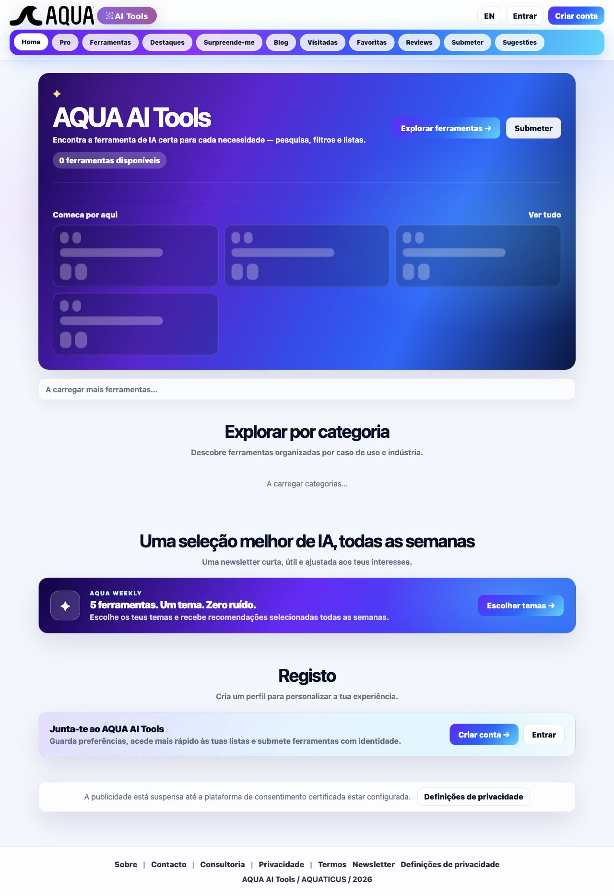

Entrada na homepage

Força: proposta de valor e ação principal são visíveis; a linguagem visual é coerente.
Risco UX: “0 ferramentas disponíveis”, skeletons e “A carregar” aparecem juntos. O sistema não explica se o catálogo está vazio, a carregar ou indisponível.
Acessibilidade: estados assíncronos precisam de mensagem clara e anúncio programático; o screenshot não confirma live regions.
Recomendação: apresentar um único estado por vez, com retry e explicação humana quando o serviço falhar.